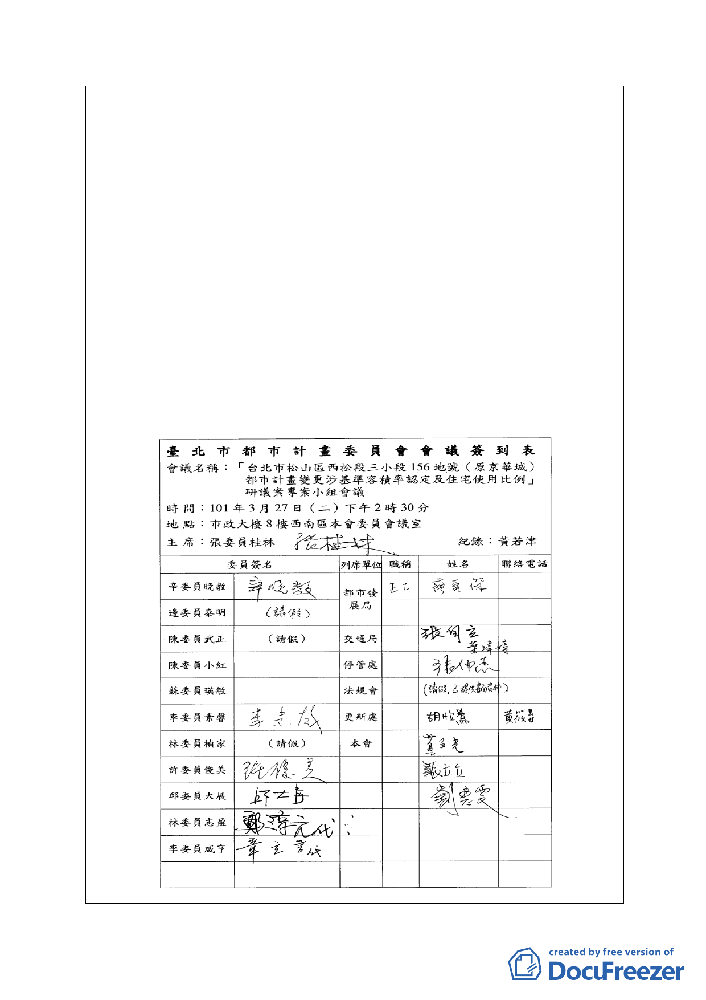

點，對本基地當年都委會同意變更為商三惟需捐 30％基
地面積、整體開發復又保障原已申請之允建樓地板面積
120284.39 ㎡之條件下，分析究以粗容積率或淨容積率認
定之比較立論，供提大會討論。
（二）本案今後改建自應依現行建築法令規定辦理。
（三）有關解除都市計畫整體開發規定，基於發展現狀依都市
發展局的建議予以解除，由一、二期所有權人分別開發。
（四）有關本案基地市府建議未來允許 30％上限之住宅使用，
是否放寬為 50％，請都市發展局就本基地之區位與鄰近
松菸（巨蛋）、臺北鐵路機車修理廠及預拌混凝土場工業
區、沿市民大道軸線發展之未來商業潛力與住宅市場需
求研提說明。
（五）辛委員發言意見併同委員發言做出詳細紀錄供參。
- 42 -